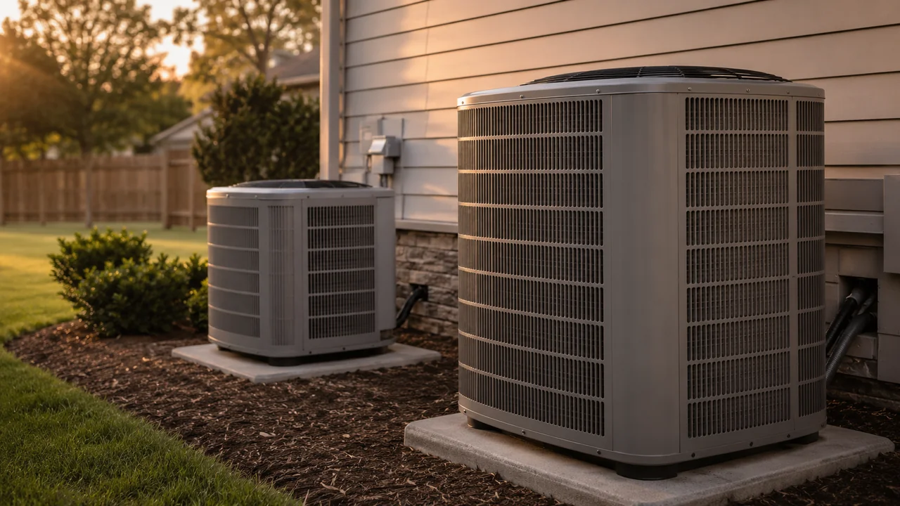

Advertising Disclosure: This site may receive compensation for service connections made through this page. Content is editorially independent.
The 14 SEER vs 18 SEER decision is dominated by one variable: your local cooling load. In hot climates (Phoenix, San Antonio, Tampa, Miami), the 18 SEER upgrade pays back in 6 to 10 years against its $2,000 to $3,500 cost premium. In mid-Atlantic mixed climates, payback runs 15 to 25 years — usually longer than equipment lifespan. In cold climates with brief cooling seasons, payback never happens on energy savings alone. Non-efficiency benefits (variable-speed comfort, humidity control, quieter operation, longer compressor life) can shift the math even in mild climates — but the dollar-payback answer is almost entirely about cooling degree days. Federal Section 25C tax credit ended December 31, 2025 (OBBBA), removing one subsidy that previously pushed homeowners toward the higher tier.
You're replacing a central AC and the contractor offered two tiers: a baseline 14 SEER unit at around $4,500 installed, or an 18 SEER unit at around $7,000 installed. The premium is $2,500. Will it ever pay back? The honest answer is "it depends on your climate" — and the gap between climates is enormous. This guide is the transparent payback math, the climate-by-climate verdict, and the three non-energy benefits that change the calculation when pure dollar payback is too slow.
This article sits inside our broader repair-or-replace decision framework — the C5 cluster pillar covering the full 5-question framework, cost thresholds, and system-type modifiers. The canonical 2026 cost reference for both tiers is the 2026 HVAC Cost Guide; every figure in this article comes from there or from ENERGY STAR's central-AC equipment dataset.
The Cost Premium: What 14 vs 18 SEER Actually Costs Installed
Three tiers worth understanding before the payback math:
| Tier | SEER (old metric) | SEER2 (current) | Compressor type | Installed cost |
|---|---|---|---|---|
| Baseline (federal minimum) | 14 (north) / 15 (south) | 13.4 / 14.3 | Single-stage on/off | $3,200–$5,000 |
| Mid-tier | 16 | 15.2 | Two-stage (high/low) | $4,500–$6,500 |
| Premium | 18–20 | 17–19 | Variable-speed inverter | $5,500–$9,000 |
Estimated ranges based on publicly available industry data. Actual costs vary by region, provider, brand, and home configuration. The canonical CCP central-AC range per costs.html is $3,200 to $7,000 installed (average $5,000) — SEER 18+ sits at the high end of that.
The premium is not just for the higher efficiency rating. SEER 18 almost always pairs with three pieces of hardware that drive the cost: a variable-speed (inverter) compressor that ramps up and down rather than slamming on and off, a variable-speed ECM blower motor on the indoor air handler, and a communicating thermostat that coordinates the two. You're paying for the system architecture more than the SEER number itself.
The federal minimums effective January 1, 2023 are SEER2 13.4 in northern states and SEER2 14.3 in southern states per the U.S. Department of Energy Conservation Standards. Anything below those numbers is illegal for new installations.
The Payback Math (Transparent Formula)
Three numbers drive everything:
- Annual cooling kWh on the baseline unit. Roughly: (cooling degree days × conditioned square footage × 0.06) ÷ SEER. A typical 1,800 sqft home in a 2,000-CDD climate on a SEER 14 system uses about 3,100 kWh/year for cooling.
- Efficiency ratio. SEER scales electricity use inversely. Going from SEER 14 to SEER 18 = 14/18 = 22.2 percent less cooling electricity at equivalent comfort, per ENERGY STAR's central-AC equipment guidance. The 3,100 kWh drops to about 2,410 kWh on the SEER 18 unit — a savings of 690 kWh per year.
- Local electricity rate. At the U.S. average of $0.165/kWh, 690 kWh saved is $114/year. At Hawaii's $0.43/kWh, the same savings is $297/year. At Wyoming's $0.13/kWh, it's $90/year.
Payback period: divide the $2,500 cost premium by the annual savings. At U.S. average rates and a 2,000-CDD climate, 690 kWh × $0.165 = $114/year — payback in 22 years. That's longer than the equipment will last (15 to 20 years for central AC per the U.S. Department of Energy). Climate is what changes that answer dramatically.
Get connected with a technician in your ZIP code.
Call Now — (844) 582-1795Disclosure: We are a referral service and may receive compensation for qualified calls. Calls may be routed to an independent provider network and may be recorded. Pricing and availability vary by provider and location.
Payback by Climate Zone (The Real Differentiator)
Cooling degree days (CDD) is the single biggest variable in this decision. Climate zones with high CDD run the AC many more hours per year, so the kWh savings from a higher SEER are larger in absolute terms. Four concrete examples from the cities this article links to:
San Diego, California (hot-dry but mild coastal moderation, ~600-1,200 CDD): Despite the hot-dry classification, San Diego's ocean influence keeps actual cooling load surprisingly low. Annual cooling savings from a SEER 14 to 18 upgrade run only $50 to $90 per year. Payback exceeds equipment lifespan in pure operating-cost terms. The exception here is California's electricity rates — among the highest in the country at $0.33/kWh — which roughly doubles the savings dollar amount, pulling payback to 15 to 18 years. Still slow, but closer to defensible than most cold-climate cases.
Shreveport, Louisiana (mixed-humid, 2,800-3,500 CDD): Long humid summers run the AC continuously for five months. Annual electricity savings from 14 to 18 SEER run $200 to $300 per year at Louisiana rates ($0.13/kWh). Payback in 8 to 13 years — within equipment lifespan, and the humidity-removal benefit of variable-speed adds real comfort value beyond the dollar math. This is the climate band where 18 SEER starts to genuinely make sense.
Wilmington, Delaware (mixed-humid, ~1,500 CDD): Mid-Atlantic summers are hot but short. Annual savings from the SEER upgrade run $80 to $130 per year at Delaware rates ($0.16/kWh). Payback in 19 to 25 years — right at the edge of equipment lifespan. The dollar math doesn't justify the upgrade alone; if you want it for comfort or humidity control, that's where the case lives.
Bismarck, North Dakota (cold, ~700 CDD): Short cooling season — maybe 8 to 10 weeks per year. Annual savings from 14 to 18 SEER run $25 to $50 per year at North Dakota's cheap electricity ($0.12/kWh). Payback exceeds 50 years — effectively never on operating-cost basis. The 18 SEER upgrade in Bismarck is a comfort or noise decision, not a payback decision. Honest answer: stay at federal minimum SEER 14 (SEER2 13.4) unless you specifically value variable-speed comfort.
SEER vs SEER2: What Changed in 2023
If you're shopping for AC equipment in 2026, you'll see both SEER and SEER2 ratings quoted. The U.S. Department of Energy made SEER2 mandatory on January 1, 2023 as the testing methodology. SEER2 uses more realistic test conditions (higher external static pressure during testing, simulating real-world ductwork resistance) and produces slightly lower numbers for the same equipment.
Rough conversion:
- SEER 14 ≈ SEER2 13.4
- SEER 15 ≈ SEER2 14.3
- SEER 16 ≈ SEER2 15.2
- SEER 18 ≈ SEER2 17
- SEER 20 ≈ SEER2 19
The federal minimum is set in SEER2 terms now: 13.4 in the north, 14.3 in the south. When you see a unit labeled "16 SEER (15.2 SEER2)" on a quote, those are the same number under different test conditions, not a downgrade. The efficiency hasn't changed — only the test got more honest.
Hidden Variables: R-410A Phase-Down and Refrigerant Type
One thing changed in 2026 that affects which units you can even buy. Under the AIM Act, EPA Technology Transitions Program rules phased down R-410A refrigerant: manufacturing of R-410A equipment ended January 1, 2025, and new installations after January 1, 2026 must use lower-GWP refrigerants like R-454B (GWP 466) or R-32 (GWP 675).
This affects the SEER 14 vs SEER 18 decision in two ways. First, every new unit installed in 2026 uses R-454B or R-32 regardless of SEER tier — you don't choose refrigerant separately from efficiency. Second, the new refrigerants run slightly higher pressures than R-410A; manufacturers redesigned both compressors and coils, which is part of why 2026 equipment costs are at the top of historical ranges across all SEER tiers. Our refrigerant article covers the homeowner-side implications in depth.
The Three Non-Energy Benefits of Variable-Speed (18+ SEER)
When pure operating-cost payback is too slow to justify the upgrade, three non-energy benefits often tip the decision:
1. Humidity removal and comfort. Single-stage 14 SEER compressors run at 100 percent until the thermostat is satisfied, then shut off. They cool fast but cycle on/off frequently, which removes less humidity than slower, longer cycles. Variable-speed 18 SEER compressors ramp up to about 30 percent and run continuously at low capacity, removing 2 to 3 times more humidity per cooling hour. In mixed-humid climates (Shreveport, mid-Atlantic Wilmington, Southeast), this is the largest practical benefit homeowners notice — the house feels cooler at the same thermostat setting because the relative humidity is 10 to 15 percent lower.
2. Noise. Variable-speed condensers run at 55 to 65 decibels during normal operation — comparable to a quiet conversation. Single-stage 14 SEER condensers typically run at 70 to 75 decibels — comparable to a vacuum cleaner. If your outdoor unit is near a bedroom window or patio, this matters. The noise difference is most pronounced in the late afternoon and early evening when the AC is running and you're trying to use the yard.
3. Compressor longevity. Single-stage compressors die from hard-start fatigue — the repeated full-load on/off cycle stresses windings, contactors, and the compressor body itself. Variable-speed compressors avoid this entirely; they ramp up smoothly and ramp down smoothly. Average lifespan: 12 to 15 years for single-stage, 18 to 22 years for variable-speed at comparable maintenance levels. If you plan to stay in the home 15+ years, the longer compressor life means one fewer mid-life repair event (typically a $900 to $2,800 compressor replacement per our repair-vs-replace article on aging AC units).
When 18 SEER Makes Sense (and When It Doesn't)
Pay the premium when:
- You're in a hot-humid or hot-dry climate with 3,000+ cooling degree days
- Your electricity rate is at or above the U.S. average ($0.16/kWh) and trending up
- Indoor humidity bothers you and your current system can't keep up
- The outdoor unit is near a bedroom and noise has been a complaint
- You're planning to stay in the home 15+ years (longer compressor payback)
- Your utility offers a $500 to $1,000 efficiency rebate that closes the cost gap
Stay at federal-minimum 14/15 SEER when:
- You're in a cold or mild climate with under 1,500 cooling degree days
- Your electricity rate is below average and gas is cheap (the rate ratio matters too)
- You're planning to sell within 5 years (efficiency upgrades don't fully recoup at sale)
- Replacement budget is tight and you'd otherwise finance the premium at 8-15% APR (APR ranges vary by lender, credit score, and promotional period — confirm current rates with the lender before signing)
- You don't have humidity, noise, or comfort complaints with your current setup
The middle tier (16 SEER, two-stage) is the underrated compromise for mid-climate homes. It delivers about half the efficiency gain of 18 SEER at one-third to one-half the premium. For Wilmington-class climates, 16 SEER often makes more sense than either 14 or 18.
Trusted Industry Sources
The guidance in this article is consistent with published recommendations from:
- U.S. Department of Energy — Central Air Conditioning
- DOE Energy Conservation Standards (SEER2 / HSPF2)
- ENERGY STAR — Central Air Conditioners
- EPA — AIM Act Technology Transitions Program
- IRS Section 25C — Energy Efficient Home Improvement Credit
A technician can assess your system and walk you through your options.
Call Now — (844) 582-1795Disclosure: We are a referral service and may receive compensation for qualified calls. Calls may be routed to an independent provider network and may be recorded. Pricing and availability vary by provider and location.
Frequently Asked Questions
It depends almost entirely on your climate's cooling load. In hot-dry or hot-humid climates with 3,500+ cooling degree days (Phoenix, San Antonio, Houston, Tampa, Miami), the 18 SEER upgrade pays back in 6 to 10 years against its $2,000 to $3,500 cost premium. In mixed-humid climates with 1,500 to 2,500 cooling degree days (Wilmington DE, mid-Atlantic, Pacific Northwest), payback runs 15 to 25 years — usually longer than equipment lifespan. In cold climates with under 1,000 cooling degree days (Bismarck ND, upper Midwest, Northeast interior), 18 SEER almost never pays back on operating cost alone — the system runs too few cooling hours per year to recover the premium. The decision is also a comfort question (variable-speed compressors at 18+ SEER cycle differently and dehumidify better) and a resale question (efficiency upgrades hold partial resale value), which can shift the math even in mild climates.
The premium runs $2,000 to $3,500 installed for a typical 3-ton residential system in 2026. A 14 SEER single-stage AC installs in the $3,200 to $5,000 range; an 18 SEER variable-speed AC installs in the $5,500 to $9,000 range. Per the canonical 2026 cost guide, the central AC range overall is $3,200 to $7,000 installed (average $5,000) — SEER 18 sits at the high end of that range. The premium is not just the efficiency rating: 18 SEER almost always pairs with a variable-speed (inverter) compressor and a variable-speed blower, which add hardware cost. A 14 SEER unit is single-stage (on/off only); a two-stage 16 SEER unit sits in between at $4,500 to $6,500.
The federal minimums effective January 1, 2023 are SEER2 13.4 in northern states and SEER2 14.3 in southern states, equivalent to the old SEER 14 and SEER 15 metrics. The U.S. Department of Energy defines northern vs southern by climate zone — most states above the Mason-Dixon line use the 13.4 minimum; states in the Sun Belt use the 14.3 minimum. SEER2 is the current testing methodology that replaced the old SEER metric on that date — it uses more realistic test conditions and produces slightly lower numbers (a SEER 16 unit tests as roughly SEER2 15.2). Buying anything below the federal minimum in your state is illegal for new installations. Buying at the minimum is fine for most homes; the question this article addresses is whether to upgrade ABOVE the minimum to SEER 18 or higher.
The payback calculation: divide the cost premium ($2,000 to $3,500 for 14→18 SEER) by the annual electricity savings. Annual savings depend on your climate and electricity rate. In Phoenix-class climates (5,000+ cooling degree days) at U.S. average electricity rates, annual savings run $300 to $450 per year — payback in 6 to 9 years. In Wilmington-class mixed-humid climates (1,500 to 2,500 CDD), annual savings run $80 to $150 per year — payback in 15 to 25 years. In Bismarck-class cold climates (under 1,000 CDD), annual savings run $20 to $50 per year — payback exceeds equipment lifespan, meaning the upgrade does not recoup its cost on operating-cost basis alone. Climate is the dominant variable; electricity rates and home insulation are secondary.
No. The federal Section 25C Energy Efficient Home Improvement Credit was terminated for property placed in service after December 31, 2025 by the One Big Beautiful Bill Act (Public Law 119-21). High-efficiency AC equipment installed in 2026 does not qualify for the federal credit on either tier. Through 2025, an ENERGY STAR Most Efficient AC (SEER2 16+) could claim up to $600 toward the credit — that pathway is closed for 2026 installs. State and utility rebates remain available — the Home Electrification and Appliance Rebates (HEAR) program is rolling out state-by-state but targets heat pumps specifically. Utility-level rebates from local energy companies often add $200 to $1,000 for ENERGY STAR-rated AC equipment regardless of tier. This is general guidance, not tax advice; consult a qualified tax professional for your specific situation.
Three meaningful non-efficiency benefits change the calculation even when pure operating-cost payback is long. First, comfort: variable-speed compressors at 18+ SEER cycle on longer at lower speeds rather than the on/off slamming of a single-stage 14 SEER unit, which means more consistent temperature, less hot-and-cold cycling, and significantly better humidity removal in mixed-humid climates. Second, noise: 18 SEER variable-speed condensers typically run at 55-65 dB vs 70-75 dB for 14 SEER single-stage — comparable to a refrigerator vs a vacuum cleaner. Third, longevity: variable-speed compressors avoid the hard start/stop cycles that wear single-stage compressors, often achieving 18 to 22 years of life vs 12 to 15 for single-stage equivalents. If the dehumidification, noise reduction, or comfort matter to you, the math gets noticeably more defensible even when pure energy payback is 15+ years.
Local HVAC Service Areas
Cool Call Pro connects homeowners with independent HVAC technicians nationwide. Find a pro in Bismarck (ND), Wilmington (DE), Shreveport (LA), or San Diego (CA), or browse by state: North Dakota, Delaware, or all locations.